It tells you what needs you.
Open C.O.S.M.O and the bot is already on the page, with what needs a person today, most urgent first.
C.O.S.M.O triages, investigates, hunts, responds and predicts. One platform, with AI at every step and nothing leaving your network. Your analysts stay in control: nothing changes until a person approves.
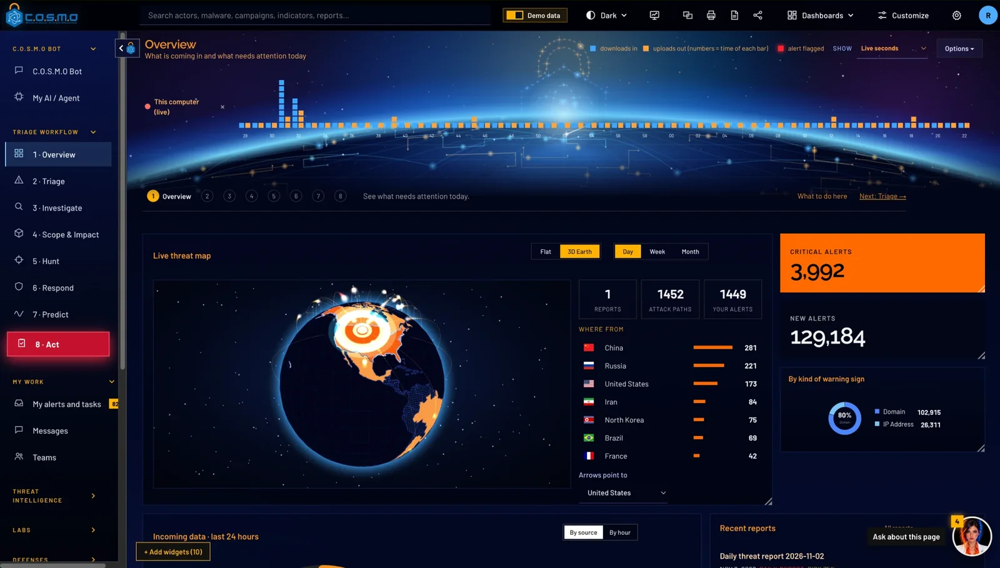
 What C.O.S.M.O is
What C.O.S.M.O is
C.O.S.M.O takes in your alerts, logs, documents and threat intelligence, then triages, investigates, hunts, responds and predicts, with an assistant at every step. It runs entirely on hardware you control. Nothing leaves your network, and nothing changes until a person approves.
Built for Security operations teams · Incident responders & threat hunters · Defense, intelligence & critical infrastructure · Teams whose data can’t go to the cloud
Too many alerts, too few analysts.
C.O.S.M.O works the whole queue. It scores every alert with its reasons and tells you what actually needs a person. The rest is grouped, explained and ready to close.
Response takes too long.
It writes the plan and a ready-to-paste work order for every team (firewall blocks, detection rules, searches), built from the evidence and waiting for your approval.
Your data can’t leave the building.
Self-hosted and able to run fully offline. Your logs, your models, your network. C.O.S.M.O never phones home, so it fits classified and air-gapped work.
Ask about a threat, paste a report, or request a playbook. Every answer cites the data on your own server, and anything that changes your network waits for a person to approve it.
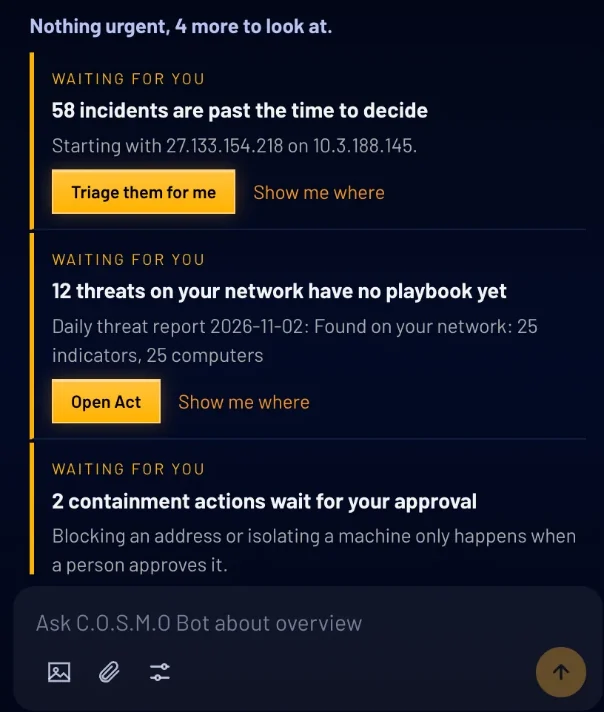
Answers cite your data. Every reply points back to the incidents, reports and rules on your own server, so you can check the working.
Paste a report, get it read. Drop in a PDF or a bulletin and the bot pulls out the addresses, fingerprints and attacker methods.
It takes you to the work. Ask for a playbook or a hunt and it opens the right screen, or runs it and waits for your approval.
Watch the bot work

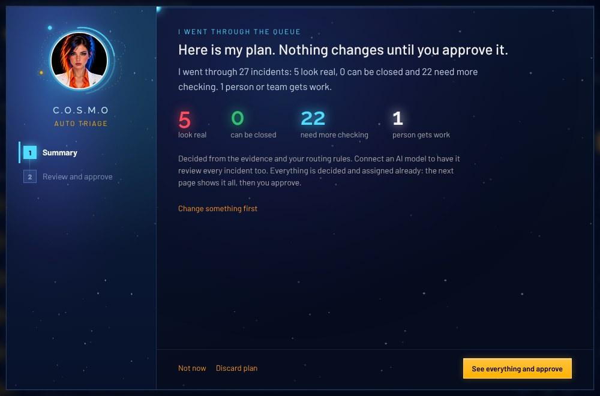
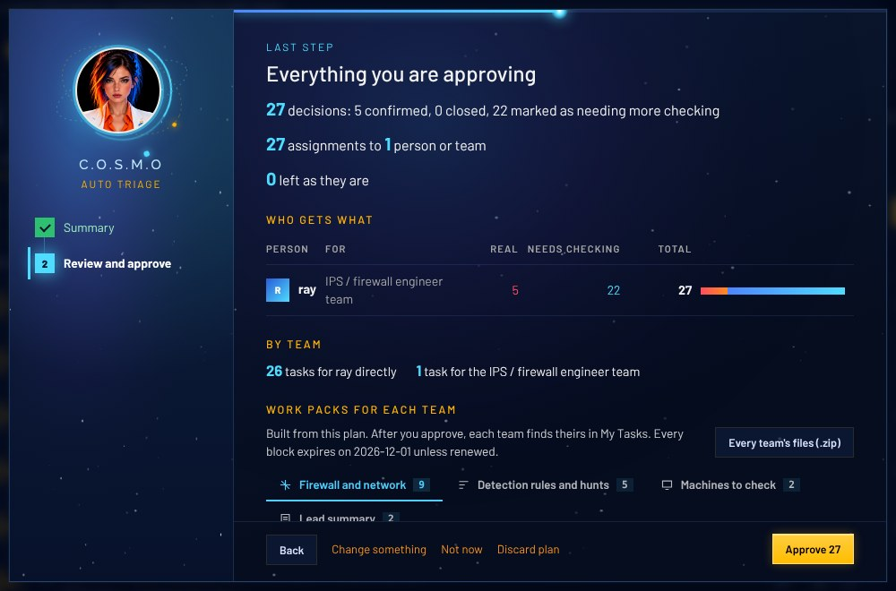
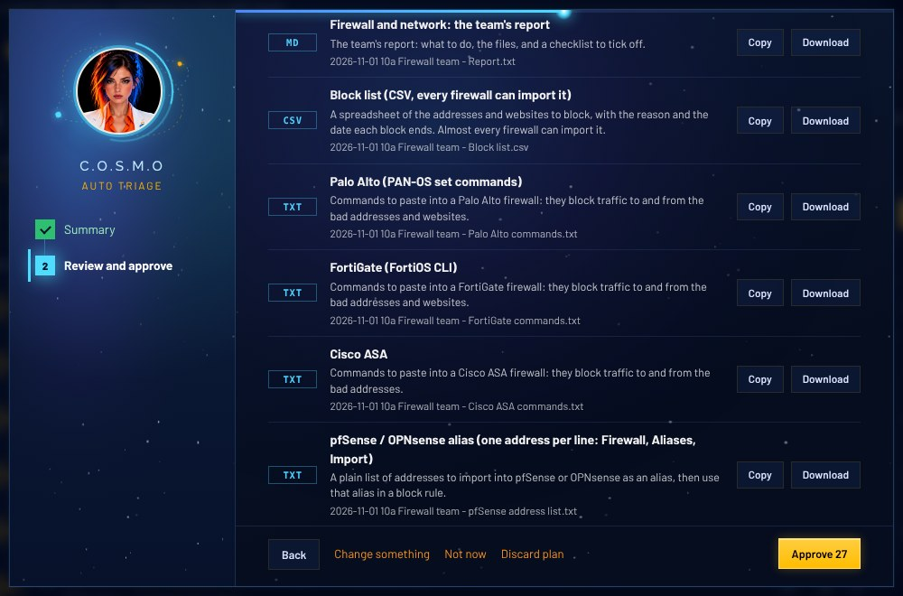

Open C.O.S.M.O and the bot is already on the page, with what needs a person today, most urgent first.
Thousands of alerts, grouped so each machine needs one decision. One click hands the queue to the bot.
The bot reads every waiting incident and says what it decided, and why, in plain English.
Every decision, every assignment and every team’s work pack, on one page, before you press Approve.
Firewall commands, detection rules, searches and a PDF work order for every team, ready to copy or download.
Real C.O.S.M.O screens with fictional demo data. Without an AI model connected the bot still decides from the evidence and your rules.
C.O.S.M.O reads the formats a security team already has. Point it at a source once, or let it read on a schedule. Where you connect a log tool, it queries the data in place, so nothing is copied.
Addresses, fingerprints and attacker methods are pulled out and highlighted on the way in — so anything an analyst can read becomes something C.O.S.M.O can work with.
| Task | By hand | With C.O.S.M.O Bot |
|---|---|---|
| Overnight alerts | Open each one and read it | Repeats on the same machine become one incident |
| Is it real? | A judgment call, notes in a spreadsheet | A score with every reason and its points, and what was checked and ruled out |
| Who takes it? | Ask around who has time | The person on the right team with the least open work |
| Firewall blocks | Write commands for each make, one by one | Commands for six makes, ready to paste, your own networks left out |
| Detection | Write rules and searches from scratch | Suricata, Sigma, YARA, Splunk and Defender, built by code and checked |
| Paperwork | Write it up and email each team | A PDF work order per team, waiting in My Tasks |
| The record | Piece together who changed what | Each change written in the approver’s name |
| Your part | All of the above | Read one summary. Press Approve. |
We do not quote hours saved: that depends on your queue. Ask us to run a demo on data like yours.
C.O.S.M.O suggests where to look for the groups and malware already in your queue, then sweeps your logs and computers for traces. Every hunt only reads, it never changes anything.
C.O.S.M.O lays out the steps to stop the attack and who does each one. Nothing is blocked, isolated or cut off until a person approves it.
C.O.S.M.O maps every machine by how many steps it sits from your most valuable systems, and draws the paths an attacker could take to reach them.
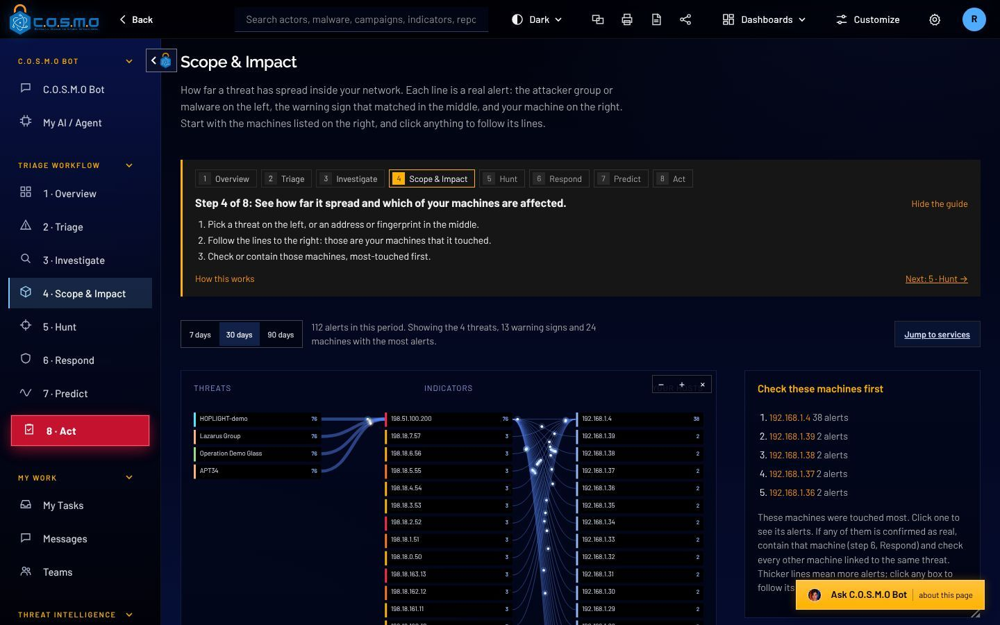
Each play is a step to block, isolate, watch or reset, across your boundary, network, computers and accounts. Nothing runs until a person approves.
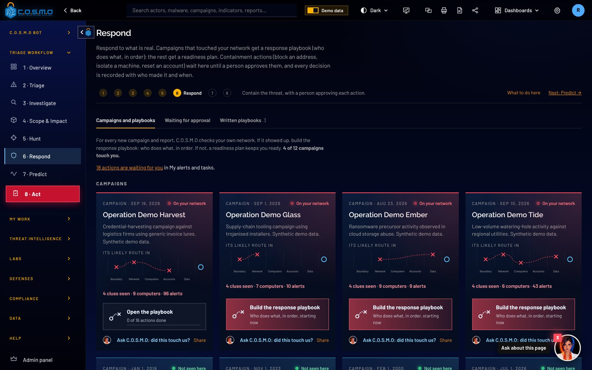
Reports, hunts, forecasts and playbooks, in the view your team works in. Flip through a few.
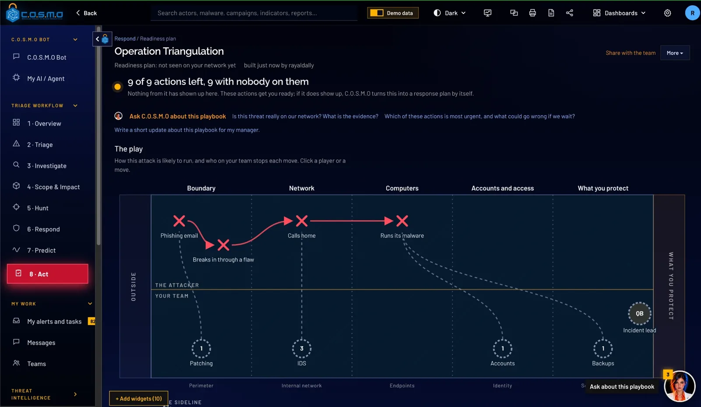
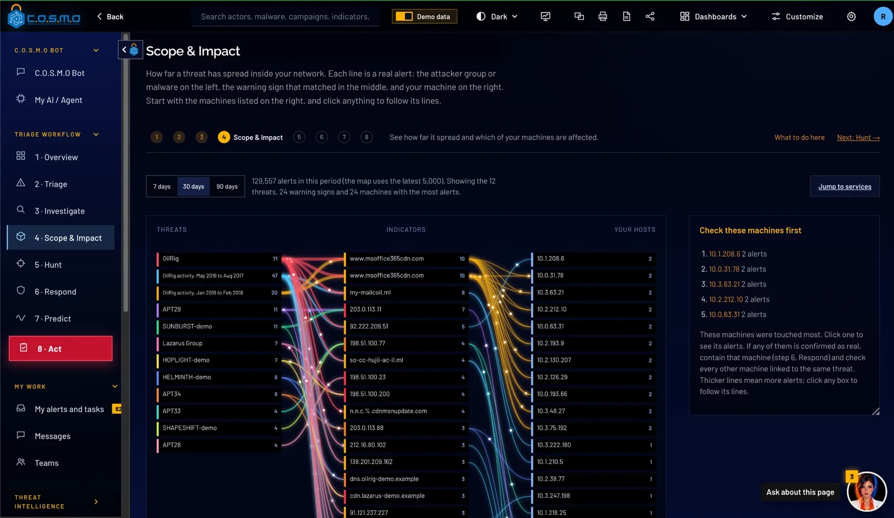
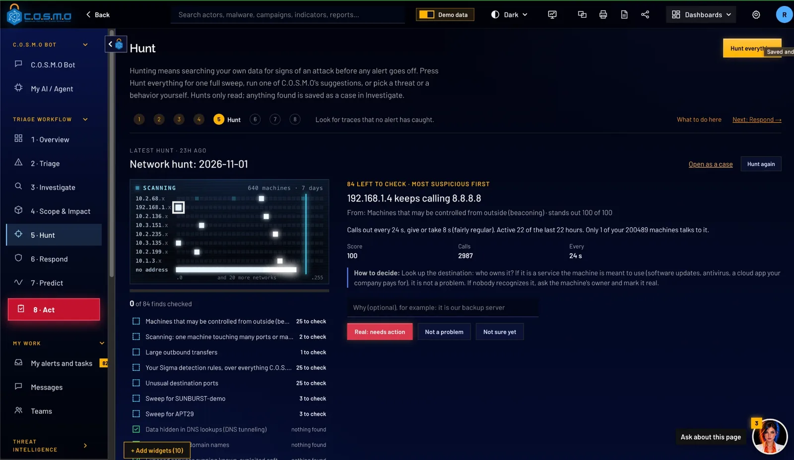
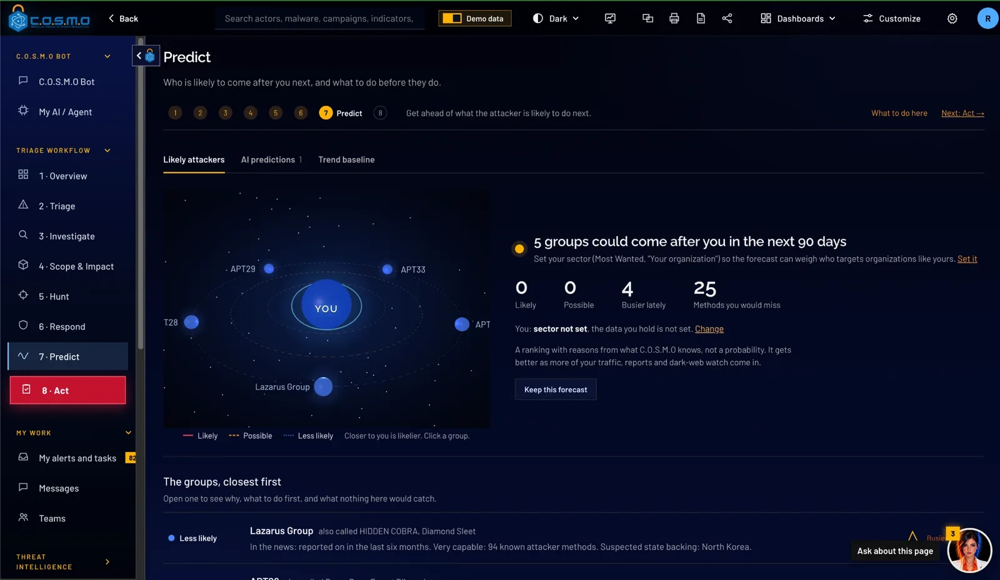
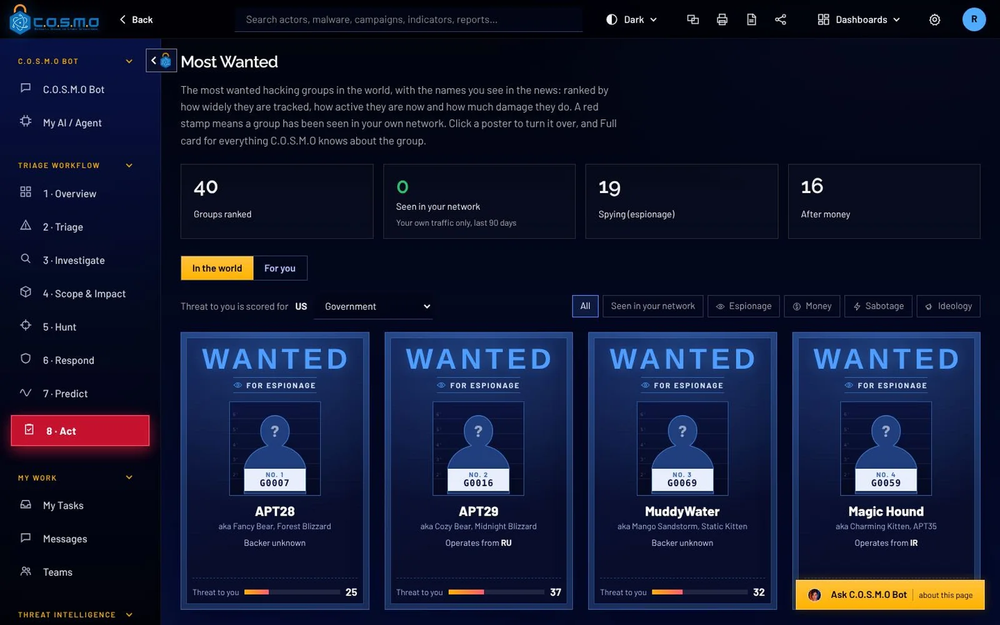
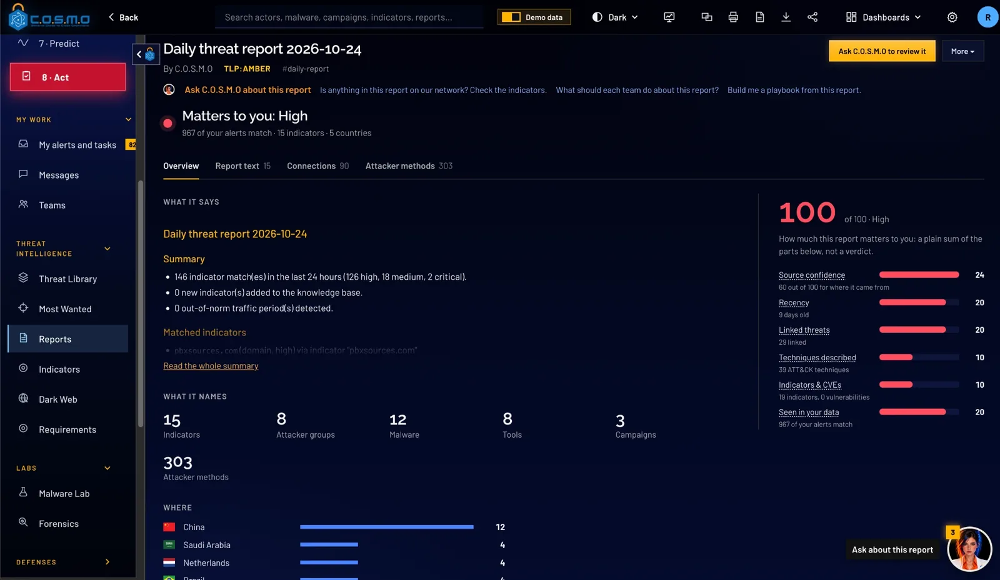
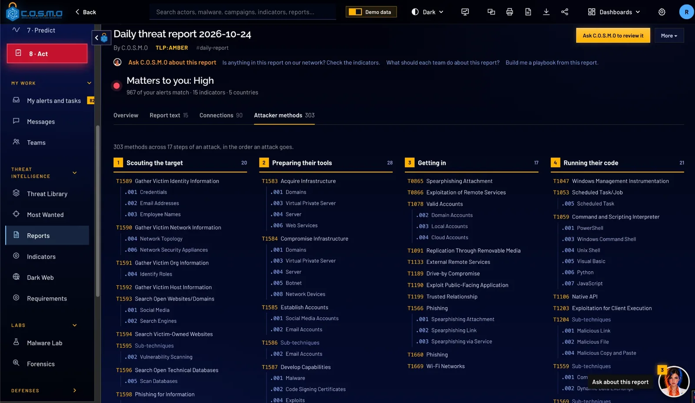
No black box. Press any score to see each point. Open any pack to see each file.
The score
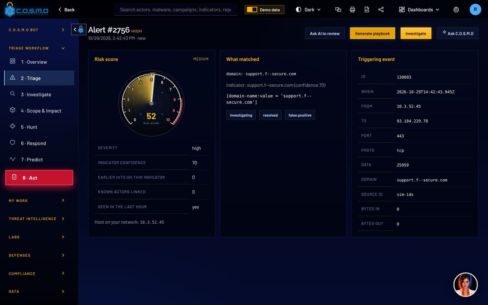
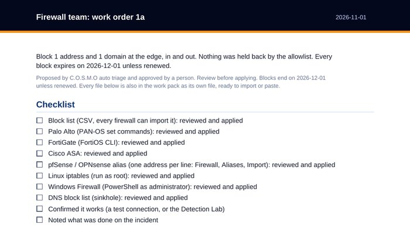
The top of a real work order PDF from the app. File names start with the date and the day’s batch.
Plus a block list any firewall imports, a DNS block list, and machines, files and accounts to check.
Drop a file or script into the Malware Lab and convene the council. Each member has one job. If you connect several AI models, each member can be a different one.
With no AI connected, C.O.S.M.O still comments the code and builds the rules itself.
Weighs the votes, writes the summary and the plan to stop the next version.
Reads every function line by line and writes the comments.
Works out what the program does on a machine, step by step.
Picks what is hard for the author to change.
Challenges every claim the code does not support.
3D threat map. See where attacks come from, drawn to your network on a live 3D Earth.
Predict. Who is likely to come next, and why, from the groups and methods aimed at you.
Proof of defense. Every detection rule is tested against the threat, approved, then retested.
Standards. Mapped to NIST 800-53, SOC 2 and OWASP, control by control.
Offline mode. Runs fully offline. Updates arrive as signed packs, nothing phones home.
Most Wanted. The top hacking groups, stamped the moment they are seen on your network.
Dark web. Leak sites and forums watched for the names and data you care about.
Respond. Ready playbooks where a person approves each action before it runs.
Threat library. Groups, malware and campaigns on MITRE ATT&CK, STIX 2.1, CISA KEV, TAXII and MISP.
AI use on your network. Which machines call which AI services. Never what anyone typed.
C.O.S.M.O is one server and one database that you run. Nothing has to leave your network, and in offline mode nothing does.
 C.O.S.M.O server
Windows, Linux, macOS or Docker, with its own PostgreSQL database
C.O.S.M.O server
Windows, Linux, macOS or Docker, with its own PostgreSQL database
Windows Server 2019, 2022 or 2025, Linux, macOS, or Docker and Podman on any VM or cloud. A team server people reach with only a browser.
Offline mode opens no outside connection. Intelligence and updates come in as signed files, checked before anything is installed.
Classification banners and portion markings, DoD sign-in rules, smart card sign-in and FIPS mode. How government mode works
C.O.S.M.O runs on a server you control. In offline mode it opens no connection outside your own network. New intelligence and new versions arrive on removable media, signed by Cypher, and are checked before anything is installed.
A system banner, and markings on what comes in: reports, indicators, documents and files, written the way the CAPCO register and DoDM 5200.01 write them, with CUI under 32 CFR 2002.
A person marks. C.O.S.M.O carries the mark, displays it and warns. A copy licensed for CUI cannot be switched to SECRET locally.
One setting switches on the FIPS cryptography provider before anything else starts and runs a self-test. If the self-test fails, C.O.S.M.O does not start.
C.O.S.M.O is not on the DoDIN Approved Products List. It is ready to start that process: FIPS mode, IPv6, DoD sign-in rules, audit with source address, and CAC/PIV.
Azure Government, Amazon Bedrock in GovCloud and GSA USAi, or your agency’s own AI gateway: paste the address and key, pick a model.
Ollama, LM Studio, vLLM or llama.cpp. Only models from American developers are offered for download.
Triage decides from the evidence and your routing rules, and the work packs and Malware Lab rules are still built.
C.O.S.M.O reads text attackers can write: alert data, dark web posts, files. So it treats all of it as data, changes nothing without a person, and keeps a record nobody can quietly edit.
Download a case record and its fingerprint is written to the sealed activity record. Paste a copy back later and C.O.S.M.O says whether it was edited.
Uploaded logs, documents and malware samples are read as data. The Malware Lab and the council take code apart without executing it.
Licenses, content packs and updates are signed with Ed25519 and checked offline against a key built into C.O.S.M.O.
The FIPS provider starts before anything else, with a self-test. If it fails, C.O.S.M.O does not start.
Single sign-on, smart cards (CAC/PIV), two-step sign-in, lockout and idle sign-out rules, set by an administrator.
It runs on your server. Offline mode stops every outside connection, including hosted AI.
C.O.S.M.O comes straight from the team that builds it. Talk to us and we will set up a demo, size it for your network and get you a quote.
Prefer a contract vehicle? C.O.S.M.O is also available through Carahsoft and its reseller partners.
We build C.O.S.M.O, so you work with us directly.
A demo runs on demo data: auto triage, a team’s work pack, the Malware Lab, and the offline setup if you need it.
Cypher is a Service-Disabled Veteran-Owned Small Business, founded in 2009 and headquartered in Ashburn, Virginia. Its technical staff are 100% cleared and support customers onsite, across the Department of Defense, the Intelligence Community and civilian agencies.